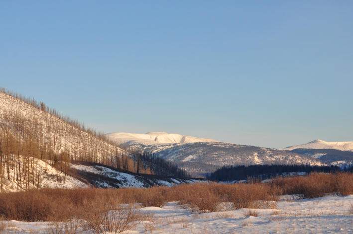

I have decided to make this site about my favorite UNESCO World Heritage site for my Cultural Heritage Data class.

I have been a fan of Mongolian history since I read the book She Who Became the Sun by Shelley Parker-Chan in 2021. It tells the story of the fall of the Mongolian Yuan Dynasty in China, but the Mongolian characters and culture included really compelled me. Since then I have engaged with other historical fiction and historical fantasy that concerns Mongolian and Chinese-Mongolian history, like Jin Yong's The Legend of the Condor Heroes, or most recently the series Jaadugar: A Witch in Mongolia.
Burkhan Khaldun is a major element of Mongolian history and heritage. It is very interwoven with the life story of the first Great Khan of Mongolia, Genghis Khan, whose birth name was Temujin. Some say he was born on this mountain; this is disputed. When he was a young man, before he united the Mongolian Steppe under his banner, he lost his home and was forced to take refuge on this mountain. He was grateful to the mountain for the rest of his life, and encouraged his children to also show reverence to this mountain. Some say he was buried there. Either way, this site is still honored by modern Mongolian people to this day.